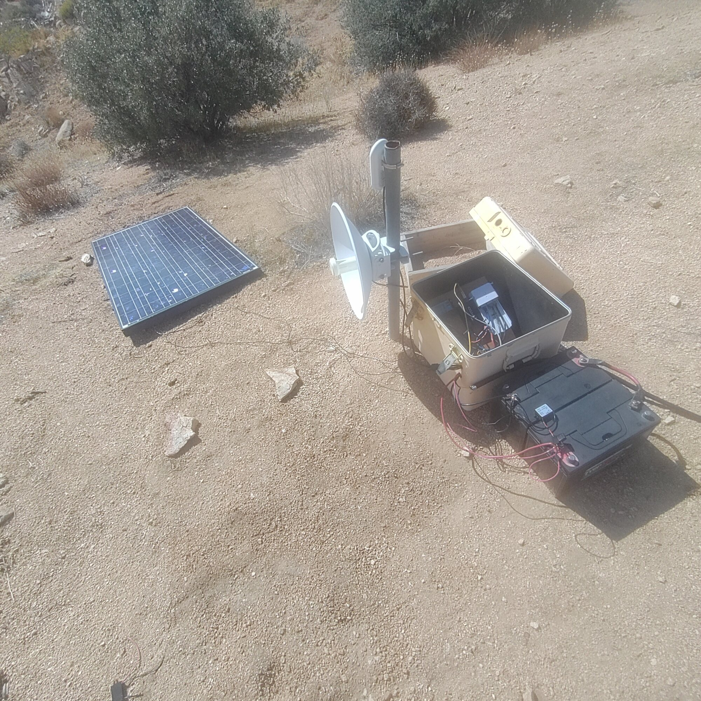
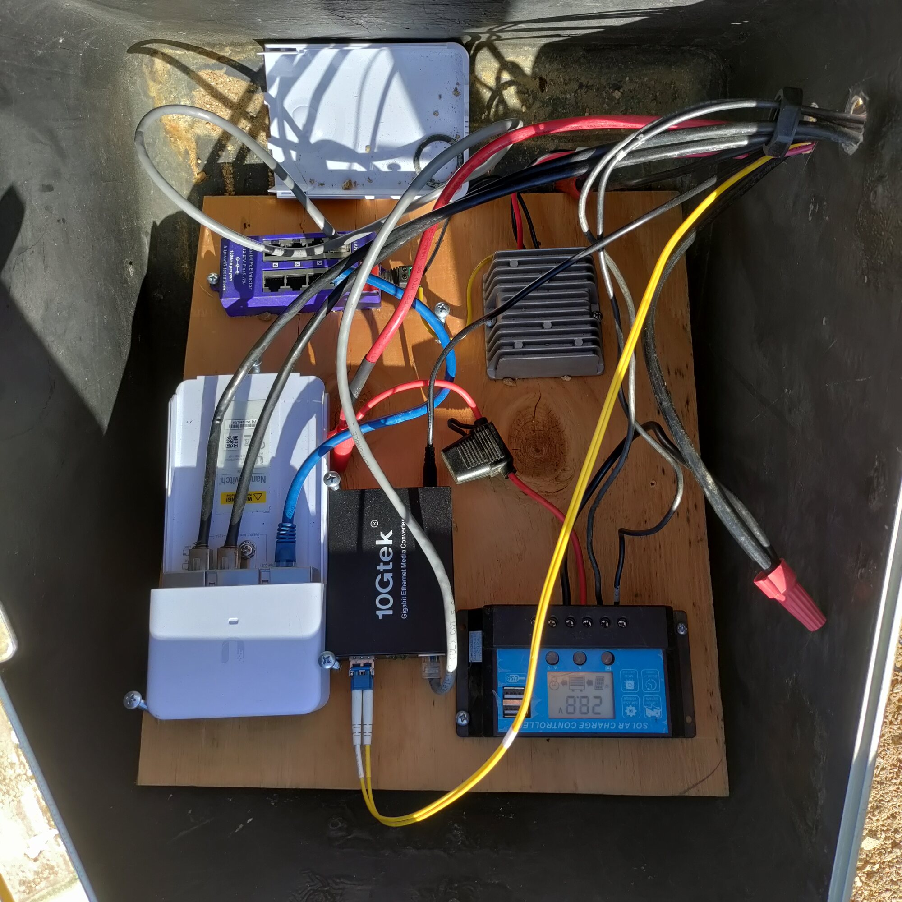

Field Report 028 · Energy
Mojave Wi-Fi Hilltop
Relay — Solar Charge
Controller Replacement
Here's the update to our September 30 Field Report for the Mojave Wi-Fi Hilltop Relay (FR004).

Here's the update to our September 30 Field Report for the Mojave Wi-Fi Hilltop Relay (FR004). The photograph clearly shows the replacement controller installed and displaying 28.8 volts on October 21, 2026.
System: FR004 — Mojave Wi-Fi Hilltop Relay\
Report Date: October 21, 2026\
Installation Date: Approximately October 7, 2026\
Category: Energy / Communications / Infrastructure\
Location: Hilltop Relay Station, Boulder Gardens Sanctuary
Overview
The Mojave Wi-Fi Hilltop Relay solar power system has received another important upgrade with the installation of a replacement solar charge controller.
This follows the September 28 battery replacement and September 30 maintenance report, which documented the restoration of the 24-volt battery bank and problems with the original charging equipment.
The new controller was installed approximately two weeks before this report.
Background
The hilltop relay provides an essential communications link between the Mojave Wi-Fi service and the Boulder Gardens network.
The installation operates independently from the electrical grid, using a solar panel, charge controller, and two 12-volt deep-cycle batteries connected in series.
In late September, the original batteries were replaced with two EverStartt 29DC flooded lead-acid batteries, each rated at 122 amp-hours.
Although the replacement batteries restored the power supply, the existing BZ Products M20+ charge controller had developed problems. Its display stopped working, making it difficult to monitor charging voltage and determine the controller's operating condition.
Charge Controller Replacement
Approximately October 7, 2026, a new digital solar charge controller was installed inside the existing equipment enclosure.
The replacement unit features:
- - An integrated LCD voltage display
- - Controls for configuring charging behavior
- - Solar, battery, and load status indicators
- - Built-in USB power outlets
The controller is mounted on the plywood equipment board alongside the communications equipment and associated electrical connections.
Its installation provides a convenient way to observe battery voltage directly at the hilltop station.
October 21 Inspection
A photograph taken October 21 documents the current installation.
The replacement charge controller is powered, and its LCD indicates approximately 28.8 volts.
This reading is consistent with a possible charging voltage for a 24-volt flooded lead-acid battery bank, although a single photograph cannot confirm the charging stage or long-term performance.
The photographed equipment enclosure also contains the fiber-optic media converter and other networking components, with the electrical wiring accessible for future inspection and maintenance.
Current System Configuration
| Component | Description |
| --------------------- | ----------------------------------------------- |
| Solar generation | Existing hilltop photovoltaic panel |
| Battery bank | 2 × EverStartt 29DC, 12 V, 122 Ah |
| Battery configuration | 24 V nominal, 122 Ah |
| Charge controller | Replacement digital solar charge controller |
| Previous controller | BZ Products M20+ |
| Observed voltage | 28.8 V on October 21 |
| Communications | Mojave Wi-Fi hilltop relay and fiber-optic link |
Follow-Up Monitoring
The next maintenance inspection should verify the controller's charging settings for flooded lead-acid batteries, including absorption and float voltages.
Battery voltage should also be checked during full sunlight and again after sunset to establish how the system behaves throughout a normal charging cycle.
The controller's exact model, current rating, and battery configuration settings should be documented for the permanent equipment inventory.
Fieldstation Notes
The replacement represents another step in the ongoing rehabilitation of the Mojave Wi-Fi Hilltop Relay.
Following the battery replacement in September, the new controller restores a direct visual indication of electrical conditions within the enclosure.
The broader objective remains unchanged: maintain a dependable, solar-powered communications station capable of operating continuously in the remote desert environment, with minimal maintenance and improved monitoring.
Fieldstation Record: FR004 — Mojave Wi-Fi Hilltop Relay\
Documentation: Installation approximately October 7, 2026; photographic inspection October 21, 2026.
One technical detail worth preserving: 28.8 V is a reasonable charging voltage for your 24 V flooded battery bank, but we should eventually verify that the new controller switches to the correct lower float voltage once the batteries are charged.
I would classify this as an update to FR020, the September 30 report, rather than creating an entirely unrelated report. That preserves the history of the hilltop system as a series of improvements.
Photographic Record
The work, seen in place
Selected photographs from the private FieldStation source record.

System Thread
Where this system connects
Public synopsis derived from Boulder Gardens Fieldstation Workbook source record FR028. Detailed equipment records, calculations, unresolved questions, and corrections remain in the workbook.